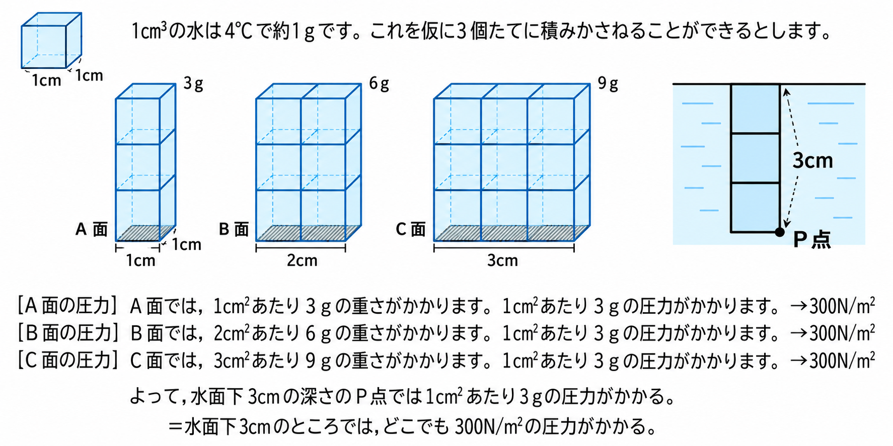
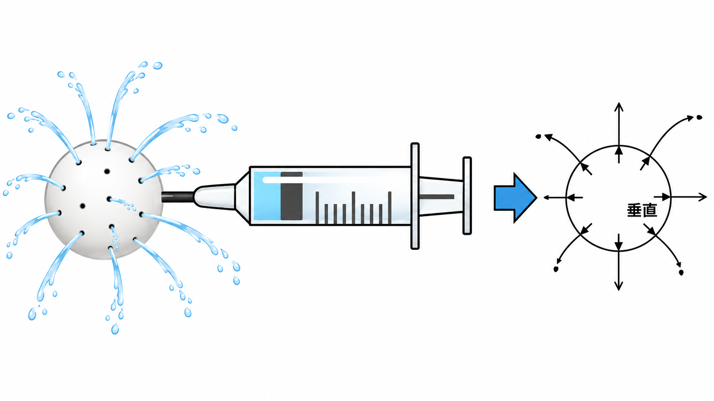
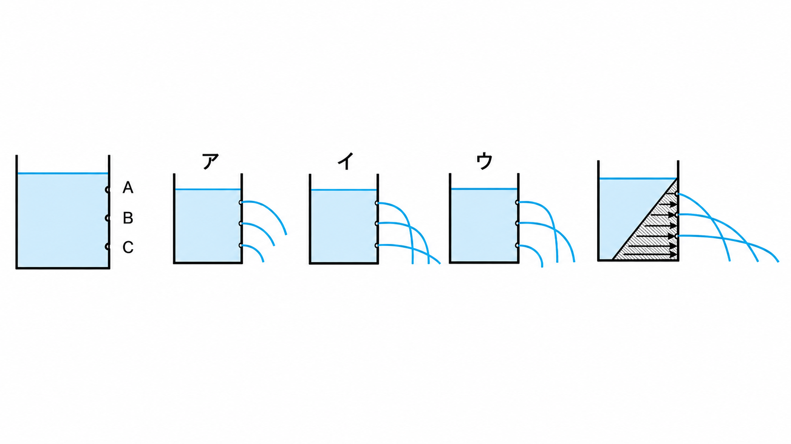
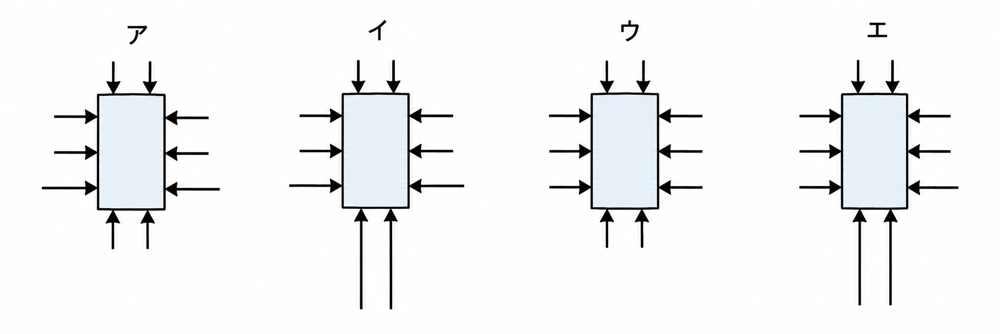
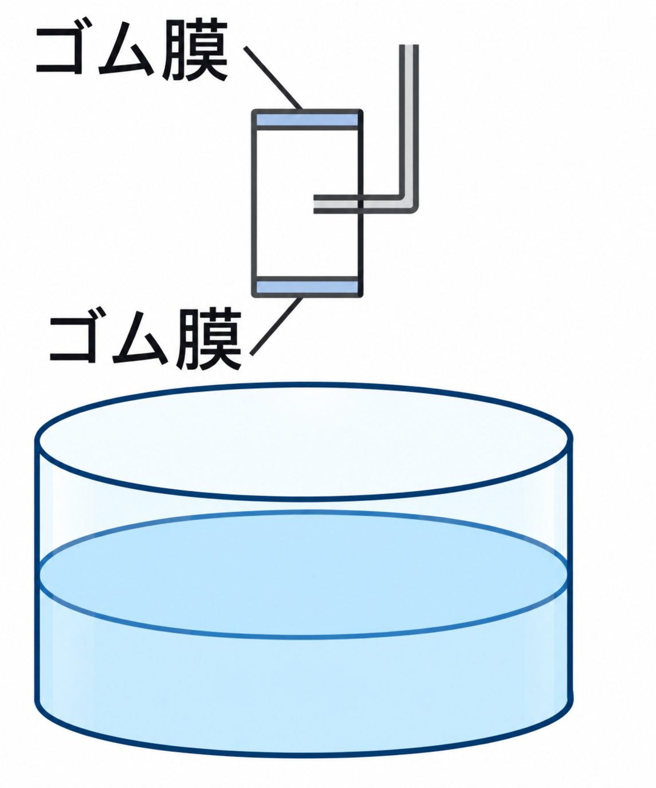
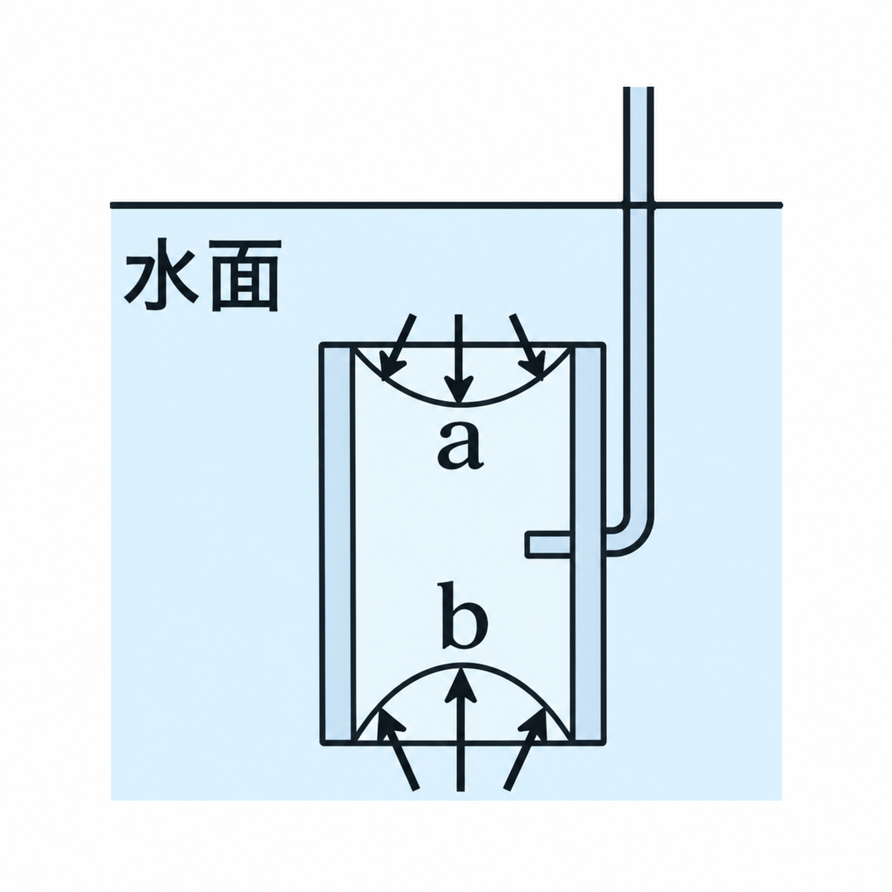
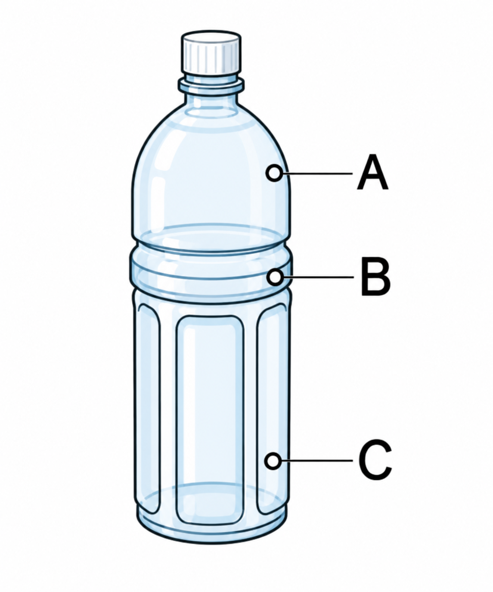
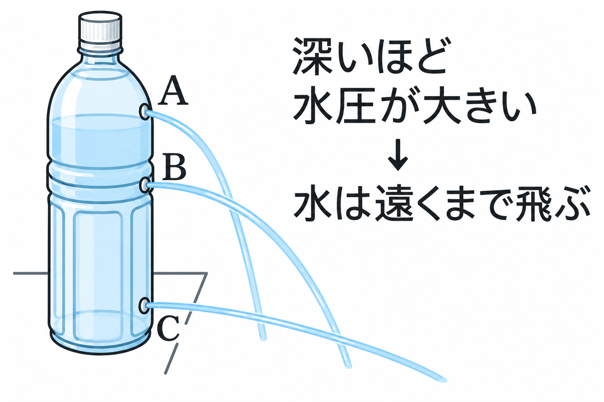

中学理科 物理分野（力・圧力） 図で確認・ミニテストで実力チェック

1cm³の水は4℃で約1gです。これを図のように1列・2列・3列に積み重ねると、A面（1cm²）には3gの重さ、B面（2cm²）には6gの重さ、C面（3cm²）には9gの重さがかかります。
このとき、どの面も1cm²あたり3gの重さがかかっているので、水面下3cmの深さでは、どこでも1cm²あたり3gの圧力（水圧）がかかることになります。
このように、水の重さによって生じる圧力を水圧といい、水圧は水面からの深さに比例します。
圧力の単位はふつうN/m²を使います。1m²＝10000cm²なので、1g/cm²の圧力は、1m²あたりでは10000g（＝100N）にあたります。つまり 1g/cm²×10000＝10000g/m²＝100N/m²となります。よって、水面下3cmでは1cm²あたり3gの水圧なので、300N/m²の水圧がかかります。
A面・B面・C面には、それぞれ1cm²あたり①gの重さがかかり、圧力はすべて等しい。このことから、水圧は②に比例することがわかる。水面下3cmでは、1cm²あたり①gの圧力＝③N/m²の水圧がかかる。
図のA・B・C面（どれも水面下3cmの深さにある）にはたらく圧力の大きさを比べると、どうなるか。
水面からの深さが深くなるほど、水圧はどうなるか。

水を入れたゴムボールに注射器で圧力を加えると、ボールの穴という穴から、どの方向にも同じ勢いで水が飛び出します。
これは、水に加えた圧力が、面に対して垂直に、同じ大きさで伝わる性質があるためです。水中のある点にはたらく圧力は、あらゆる方向に同じ大きさでかかります。
水に加えた圧力は、面に対して①に、②の大きさでかかる。
水を入れたゴムボールに注射器で圧力を加えると、ボールのたくさんの穴からはどのように水が飛び出すか。

【例題1】水そうに水を入れ、図のA・B・Cのように同じ大きさの穴をあけると、水はどのように飛び出すか。
水圧は深さに比例して大きくなるので、いちばん深いところにある穴ほど水圧が大きく、水は勢いよく、遠くまで飛び出します。したがって、上のA、真ん中のB、いちばん深いCの順に勢いが強くなり、正解はイのように、下にいくほど遠くまで水が飛ぶ図になります。
【例題1】水そうに、深さの異なるA・B・Cの穴（同じ大きさ）をあけた。水はどのように飛び出すか、正しいものをア〜ウから選ぼう（Cがいちばん深い穴である）。
同じ図のいちばん右にある、三角形に矢印がかかれた模式図を見よう。この矢印は水圧の大きさを表している。矢印が下にいくほど長くなっているのはなぜか。

【宮城県入試・改】糸のついた円柱形の金属全体を水中に沈めた。側面と上下の面にはたらく水圧の向きと大きさを表した模式図はどれか。
水圧は面に対して垂直にかかり、同じ深さでは同じ大きさ、深いところほど大きくなります。側面では、同じ高さ（＝同じ深さ）にある左右の矢印は同じ長さ・向きになりますが、上の矢印より下の矢印のほうが長くならなければいけません（深いほど水圧が大きいから）。さらに、いちばん深いところにある底面は、いちばん浅い上面より水圧がずっと大きいので、底面の矢印は上面の矢印よりはっきりと長く描かれる必要があります。この条件をすべて満たすのはイです。アは側面の矢印は深さに応じて変化していますが、底面の矢印が上面と同じ短さのままになっており、底面のほうが深いことが表せていないので誤りです。ウ・エは側面の3本の矢印の長さがどれも同じで、深さによる違いが表せていないので誤りです。
【宮城県入試・改】糸のついた円柱形の金属全体を水中に沈めた。側面と上下の面にはたらく水圧の向き（矢印の向き）と大きさ（矢印の長さ）を正しく表した模式図は、ア〜エのどれか。
円柱の側面にはたらく水圧は、面に対して①にかかり、同じ深さであれば大きさは②である。深い場所ほど水圧は③。
ここまで学んだ「水圧」について、入試問題で確認しましょう。
水中の物体にはたらく、水の重さによって生じる圧力を何というか。
(1)で答えた水圧は、水面からの深さが深くなるほどどうなるか。
【宮城県入試・改】糸のついた円柱形の金属全体を水中に沈めた。側面と上下の面にはたらく水圧の向きと大きさを正しく表した模式図は、ア〜エのどれか。
【佐賀県入試・改】図のような、うすいゴム膜を上下に2枚つけた筒状の水圧実験装置がある。上のゴム膜の位置をa、下のゴム膜の位置をbとする。この装置を、図のように水中に沈めると、2枚のゴム膜はどうなるか。


図のように、水で満たしたペットボトルの側面に、同じ大きさの穴A・B・Cをあけた（Cがいちばん深い位置にあけた穴である）。水が遠くまで飛んだ順に並べると、①＞②＞③となる。

